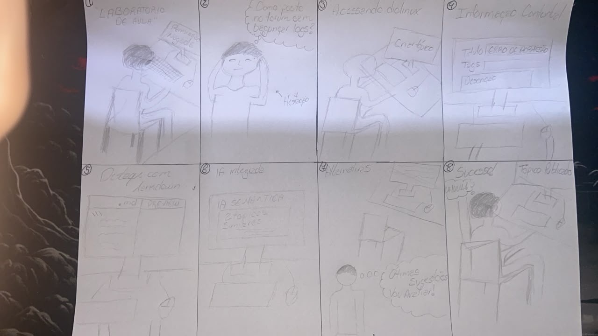

Storyboard: Criação e Publicação de Tópico de Dúvida com Tags e Formatação Markdown com Integração de IA Semântica
Tabela de Contribuição e Transparência de IA Generativa
A Tabela 1 documenta a participação dos integrantes da equipe na elaboração deste documento, bem como o uso ético e supervisionado de Inteligência Artificial Generativa.
Tabela 1 — Tabela de Contribuição e Uso de IA Generativa
| Integrante | Contribuição no Artefato | Data | Ferramenta de IA Utilizada | Propósito do Uso de IA |
|---|---|---|---|---|
| Vinicius Silva Araruna | Concepção dos roteiros narrativos, confecção manual dos quadros em papel (Opção B), digitalização e elaboração integral da documentação e matriz de rastreabilidade | 24/10/2026 | Antigravity (LLM) | Apoio na estruturação sintática de tabelas Markdown e alinhamento da matriz de rastreabilidade HTA. |
| Gustavo Antonio Rodrigues e Silva | Revisão técnica por pares, conferência de rastreabilidade com a persona Lucas Mendonça e verificação de critérios de legibilidade | 24/10/2026 | — | Revisão e validação crítica conjunta. |
Fonte: Elaborada pelos autores, 2026.
Introdução
Este documento apresenta o Storyboard da Tarefa 1: Criação e Publicação de Tópico de Dúvida com Tags e Formatação Markdown com Integração de IA Semântica, desenvolvido pelo Grupo 08 no âmbito da disciplina de Interação Humano-Computador (FGA0173), sob docência do Prof. Dr. André Barros de Sales (Faculdade UnB Gama — FGA/UnB).
O artefato integra as atividades de prototipação de baixa fidelidade do Nível 1 do Ciclo de Vida de Mayhew (1999), tendo como cenário o Fórum Diolinux Plus e como foco exclusivo o papel do Estudante / Usuário Aprendiz, representado pela Persona Primária do projeto, Lucas Mendonça.
Fundamentação Teórica
Autor do Item Teórico: Vinicius Silva Araruna
O Storyboard é uma técnica visual de prototipação de baixa fidelidade originada na indústria de animação e cinema e incorporada à área de Interação Humano-Computador com o propósito de contextualizar cenários de interação, ambientes físicos de uso e fluxos procedurais dos usuários (Barbosa & Silva, 2021, p. 237–240). Estruturalmente, consiste em uma sequência ordenada de quadros, desenhos ou esboços estáticos (sketches), acompanhados de legendas e descrições textuais que revelam o progresso de uma pessoa na execução de suas tarefas em um sistema interativo.
Conforme enfatizado por Buxton (2007) em Sketching User Experiences, o diferencial metodológico do storyboard em estágios iniciais de concepção reside na capacidade de contar uma história (storytelling) sem a necessidade de desenhar telas ou botões com precisão milimétrica de código. Trata-se de situar a tecnologia na vida humana: quais circunstâncias disparam a necessidade do sistema, que atritos cognitivos surgem durante a manipulação e qual o desfecho de valor gerado para o indivíduo e sua comunidade (Carroll, 2000; Mayhew, 1999).
Adicionalmente, Klemmer (2012) sintetiza que um storyboard eficaz em IHC deve articular três dimensões primordiais: 1. Setting (Cenário / Ambientação): Quem é o usuário, onde ele está situado e qual o problema real do mundo físico que deflagra a necessidade de uso; 2. Sequence (Sequência / Jornada): Quais ações o usuário realiza, como o sistema reage e como os estados da interface se transformam ao longo do tempo; 3. Satisfaction (Satisfação / Conclusão): Qual a reação do usuário ao concluir a tarefa, como sua dor inicial é sanada e que benefício concreto é obtido.
Metodologia de Confecção (Opção B: Desenho Manual em Papel)
Em conformidade com as diretrizes pedagógicas da disciplina, a equipe adotou a Opção B (Ilustração Manual em Papel com Digitalização):
- Ilustração em Folha A4: Os 8 quadros da sequência narrativa foram desenhados à mão em folha de papel sulfite A4, enfatizando expressões corporais, o ambiente de estudos de Lucas e os elementos estruturais do editor Discourse;
- Digitalização Fotográfica em Alta Resolução: A prancha manual foi fotografada em alta definição com iluminação difusa, assegurando a fidelidade de traços, legendas e textos manuscritos;
- Tratamento Digital de Contraste: O arquivo foi ajustado para nivelamento de luminância e otimização do contraste entre traços escuros e fundo branco, garantindo legibilidade e conformidade ergonômica com critérios de acessibilidade visual;
- Diagramação e Rastreabilidade Formal: A prancha física foi incorporada neste artefato com legendas analíticas quadro a quadro, acompanhada de tabela decompositiva e correspondência unívoca com a Análise Hierárquica de Tarefas (HTA).
Rastreabilidade com a Persona Primária (Lucas Mendonça)
A narrativa do storyboard materializa diretamente as características e motivações da Persona 1: Lucas Mendonça, definida no artefato de Personas (docs/analise-requisitos/personas.md):
- Identidade e Papel: Lucas Mendonça tem 23 anos, é graduando de Engenharia de Software e estagiário DevOps, atuando como usuário aprendiz e intermediário em distribuições Linux (Fedora);
- Ponto de Dor Principal: Dificuldade com ferramentas que quebram a formatação de comandos de terminal e logs de depuração, gerando tópicos truncados e poluição visual na comunidade;
- Meta Operacional: Publicar uma dúvida técnica sobre falha de permissão ao montar volumes em contêineres Podman no Fedora 40, inserindo logs encapsulados em blocos Markdown com syntax highlight, tags taxonômicas precisas e verificação inteligente de tópicos semelhantes via integração de IA semântica pré-envio para não gerar duplicatas, obtendo uma resposta resolutiva de membros experientes.
A Prancha Física do Storyboard da Tarefa 1 (Opção B)
A Figura 1 apresenta a prancha completa do Storyboard da Tarefa 1 confeccionada à mão em papel por Vinicius Silva Araruna, contendo a sequência cronológica dos 8 quadros da jornada de interação.

Figura 1 — Prancha original manuscrita do Storyboard da Tarefa 1 (Opção B).
Fonte: Vinicius Silva Araruna, 2026.
Conforme ilustrado na Figura 1, a narrativa percorre desde o gatilho emocional no terminal até o encerramento com validação colaborativa na comunidade.
Decomposição Sequencial dos 8 Quadros Narrativos
A Tabela 2 apresenta a decomposição técnica e ergonômica de cada um dos 8 quadros da sequência do Storyboard da Tarefa 1 com Integração de IA Semântica, detalhando o enquadramento cênico, a ação física do usuário, os diálogos internos da persona e os feedbacks da interface Discourse.
Tabela 2 — Roteiro Cênico e Análise Ergonômica dos 8 Quadros do Storyboard da Tarefa 1 com Integração de IA Semântica
| Quadro | Título da Cena | Enquadramento & Ambientação (Setting) | Ação do Usuário e Pensamento de Lucas | Resposta da Interface Discourse (Sequence) | Subobjetivo HTA Correlato |
|---|---|---|---|---|---|
| 1 | O Dilema Técnico no Terminal | Plano Médio: Lucas sentado à mesa de estudos em seu quarto, tarde da noite. A tela do notebook exibe terminal escuro com traceback de erro do Podman. | Pensamento de Lucas: "O Podman rootless está falhando ao montar volume no Fedora 40... Já revisei o Containerfile e o erro persiste." | Terminal com mensagem: Error: failed to mount rootfs: operation not permitted. |
— (Gatilho da Dor no Mundo Real) |
| 2 | A Decisão de Buscar a Comunidade | Plano Médio: Lucas abre o navegador Firefox e acessa o endereço do fórum. | Fala de Lucas: "Vou abrir um tópico no Diolinux Plus. A comunidade técnica lá é muito experiente e rápida pra responder." | Página inicial do Fórum Diolinux Plus renderizada com lista de tópicos em alta e botão de criação acessível. | — (Contexto de Uso e Motivação) |
| 3 | Acionamento e Desduplicação por IA Semântica | Primeiro Plano: Lucas clica no botão + Novo Tópico e digita o título da dúvida técnica. |
Ação: Clica em + Novo Tópico e digita: "Podman rootless: falha ao montar volume no Fedora 40".Pensamento: "Deixa eu ver se a IA do fórum já acha tópico resolvido..." |
Painel inferior do composer se expande. Motor com integração de IA semântica pré-envio projeta tópicos similares no painel lateral direito para análise. | Subobjetivos 1.1, 2.1 e 4.1 |
| 4 | Categorização Taxonômica e Tags | Close-up no Editor: Lucas ajusta o dropdown taxonômico e adiciona etiquetas temáticas. | Ação: Seleciona a categoria Desenvolvimento e digita as tags fedora, podman, containers.Pensamento: "Classificar certinho faz a notificação chegar a quem entende do assunto." |
Dropdown consolida o badge da categoria e adiciona os chips coloridos de tags fixados no rascunho do tópico. | Subobjetivo 2.2 |
| 5 | Composição em Markdown e Live Preview | Visão Dividida (Split-Screen): Editor de texto à esquerda e pré-visualização à direita. | Ação: Cola o log de erro delimitado por cercas triplas ```bash.Pensamento: "Perfeito! O preview mostra a formatação e as quebras de linha perfeitamente preservadas." |
Live preview à direita renderiza o bloco com fonte monoespaçada, fundo escurecido e realce sintático imediato. | Subobjetivos 3.1 e 3.2 |
| 6 | Revisão Final e Confirmação de Envio | Plano Médio: Lucas confere o texto completo e clica no botão primário de submissão. | Fala de Lucas: "Tudo organizado, logs legíveis e tags configuradas. Vou publicar!" Ação: Clica em Criar Tópico (ou aciona Ctrl+Enter). |
Botão Criar Tópico entra em processamento breve e redireciona suavemente para a thread oficial recém-criada. |
Subobjetivos 5.1 e 5.2 |
| 7 | Notificação e Apoio Comunitário | Plano Médio: Notificação com badge verde no ícone do sino superior. | Pensamento de Lucas: "Notificação nova! Um usuário sênior respondeu sugerindo ajustar a flag :z do SELinux e rodar setsebool." | Caixa de notificação do fórum exibe o fragmento da resposta com o comando recomendado devidamente formatado. | — (Interação Comunitária) |
| 8 | Desfecho Exitoso e Reconhecimento | Plano Aberto: Lucas sorri com o comando funcionando no terminal e marca a resposta como solução no fórum. | Fala de Lucas: "Funcionou de primeira! Marquei como solução aceita pra ajudar outros estudantes." | Resposta no tópico recebe a tarja verde ✔ Solução Aceita, fechando o ciclo de valor da comunidade. |
— (Satisfação e Fechamento de Valor) |
Fonte: Elaborada por Vinicius Silva Araruna, 2026.
Matriz de Rastreabilidade HTA × Storyboard da Tarefa 1 com Integração de IA Semântica
A Figura 2 apresenta o diagrama hierárquico HTA canônico da Tarefa 1 com Integração de IA Semântica, elaborado com caixas brancas e linhas terminais de operações (critério de parada p × c) segundo Barbosa e Silva (2021). Os nós do diagrama correspondem diretamente às cenas vivenciadas por Lucas Mendonça nos quadros do storyboard.

Figura 2 — Diagrama HTA canônico da Tarefa 1 com Integração de IA Semântica. Fonte: Elaborado por Vinicius Silva Araruna com base em Barbosa e Silva (2021), 2026.
A Tabela 3 consolida o alinhamento metodológico bidirecional entre as operações da Análise Hierárquica de Tarefas (HTA) da Tarefa 1 e os momentos retratados na narrativa visual do Storyboard.
Tabela 3 — Rastreabilidade entre a Decomposição HTA e os Quadros do Storyboard
| Nó HTA | Descrição da Meta / Operação da Tarefa 1 | Quadro do Storyboard | Elemento Visual e Comportamento Representado |
|---|---|---|---|
| G0 | Publicar Tópico de Dúvida Técnica no Fórum Diolinux Plus com Integração de IA Semântica | Quadros 1 a 8 | Jornada completa da experiência, da motivação inicial ao desfecho colaborativo. |
| G1 / O1.1 | Acionar Mecanismo de Criação de Tópico (clique no botão + Novo Tópico) |
Quadro 3 | Botão azul em destaque superior direito e abertura da gaveta inferior do composer. |
| G2 / O2.1 | Digitar título com sintaxe da dúvida | Quadro 3 | Campo de título preenchido com termos técnicos precisos sobre Podman e Fedora 40. |
| G2 / O2.2 | Selecionar categoria e inserir tags | Quadro 4 | Dropdown com categoria Desenvolvimento e chips taxonômicos fedora, podman, containers. |
| G3 / O3.1 | Redigir descrição do problema no editor | Quadro 5 | Composição explicativa do cenário no painel esquerdo do editor de texto. |
| G3 / O3.2 | Inserir blocos de logs com cercas Markdown | Quadro 5 | Utilização de crases triplas ```bash e validação imediata no Live Preview renderizado. |
| G4 / O4.1 | Inspecionar sugestões de similaridade por IA semântica pré-envio | Quadro 3 | Exibição de tópicos correlatos no painel lateral gerado pelo motor de IA semântica pré-envio. |
| G4 / O4.3 | Confirmar ausência de solução prévia e prosseguir | Quadro 4 | Constatação de que os tópicos sugeridos não abordam o caso e prosseguimento do fluxo. |
| G5 / O5.1 | Acionar botão Criar Tópico (ou Ctrl+Enter) |
Quadro 6 | Clique de confirmação no botão primário inferior esquerdo do composer. |
| G5 / O5.2 | Validar redirecionamento para o tópico criado | Quadro 6 | Carregamento da thread publicada com URL definitiva e metadados renderizados. |
Fonte: Elaborada por Vinicius Silva Araruna, 2026.
Lista de Verificação da Técnica (Storyboard)
A Tabela 4 apresenta a lista de verificação com 8 critérios normativos aplicados sobre o artefato, atestando sua conformidade com a literatura canônica de IHC e com as diretrizes da disciplina.
Tabela 4 — Lista de Verificação da Técnica de Storyboard
| Item | Critério Avaliado | Fonte Normativa | Conforme? | Resposta Autoexplicativa e Evidência no Documento |
|---|---|---|---|---|
| 1 | O storyboard apresenta uma sequência cronológica clara e progressiva da jornada do usuário? | Barbosa & Silva (2021, p. 238) | ✅ Sim | Estruturado linearmente em 8 quadros sequenciais (Quadro 1 ao 8), da situação-problema ao desfecho. |
| 2 | O contexto ambiental e a motivação inicial são retratados antes do uso do computador? | Buxton (2007, p. 112); Klemmer (2012) | ✅ Sim | O Quadro 1 situa Lucas em sua mesa de estudos à noite, enfrentando a mensagem de erro do Podman no terminal. |
| 3 | O protagonista é explicitamente alinhado à persona primária do projeto? | Cooper (1999); Barbosa & Silva (2021) | ✅ Sim | O protagonista é Lucas Mendonça (Persona Primária de personas.md), mantendo suas dores e perfil de estudante DevOps. |
| 4 | Há rastreabilidade direta com os subobjetivos da Tarefa 1 modelada na Análise de Tarefas (HTA)? | Barbosa & Silva (2021, p. 180) | ✅ Sim | A Tabela 3 estabelece o mapeamento unívoco entre os nós HTA (G0 a G5) e os quadros do storyboard com integração de IA semântica. |
| 5 | As ações do usuário e as respostas do sistema Discourse são claramente distinguíveis? | Nielsen (1994) | ✅ Sim | A Tabela 2 segrega a coluna de Ação do Usuário/Pensamento da coluna de Resposta da Interface Discourse. |
| 6 | As três dimensões centrais de Storyboard (Setting, Sequence, Satisfaction) estão contempladas? | Scott Klemmer (2012) | ✅ Sim | O artefato articula o cenário no Quadro 1, a sequência nos Quadros 2 a 6 e a satisfação nos Quadros 7 e 8. |
| 7 | O desfecho da narrativa demonstra o fechamento do ciclo de valor e a resolução da dor? | Mayhew (1999) | ✅ Sim | O Quadro 8 retrata o sucesso da execução no terminal e a marcação comunitária do selo ✔ Solução Aceita. |
| 8 | A técnica de confecção atende às diretrizes pedagógicas da disciplina (Opção B - Desenho manual a 300 DPI)? | Plano de Ensino da Disciplina | ✅ Sim | Os quadros foram desenhados manualmente em papel sulfite A4, fotografados em alta resolução e tratados digitalmente. |
Fonte: Elaborada por Vinicius Silva Araruna, 2026.
Registros Audiovisuais (Teste-Piloto e Avaliação Oficial)
A Tabela 5 consolida os registros audiovisuais em vídeo das sessões práticas de validação do Storyboard 1 conduzidas por Vinicius Silva Araruna, disponibilizadas no YouTube sob o regime Não Listado.
Tabela 5 — Registros audiovisuais do Storyboard 1 (Teste-Piloto e Avaliação Formativa com Participante)
| Etapa | Objetivo / Atividade | Responsável | Participante | Data | Vídeo no YouTube |
|---|---|---|---|---|---|
| Teste-Piloto | Calibração instrumental de enquadramento, iluminação, áudio e temporização do script oral do TCLE (< 60s) | Vinicius Silva Araruna | Autoensaio Solo | 21/10/2026 | Assistir no YouTube (e4annKBJd3I) |
| Avaliação Oficial | Sessão de avaliação formativa presencial do Storyboard 1 e HTA via entrevista semiestruturada | Vinicius Silva Araruna | Participante J.V.S (CIC/UnB) | 22/10/2026 | Assistir no YouTube (_4nQ50nN7b8) |
Fonte: Elaborada por Vinicius Silva Araruna, 2026.
Vídeo 1 — Teste-Piloto do Storyboard 1 (Vinicius Silva Araruna)
Vídeo 1 — Registro em vídeo do Teste-Piloto do Storyboard 1 (autoensaio solo). Fonte: Vinicius Silva Araruna, 2026.
Assistir diretamente no YouTube: https://youtu.be/e4annKBJd3I
Vídeo 2 — Gravação da Avaliação Oficial do Storyboard 1 (Vinicius Silva Araruna)
Vídeo 2 — Registro em vídeo da Avaliação Formativa com Participante (J.V.S) do Storyboard 1. Fonte: Vinicius Silva Araruna, 2026.
Assistir diretamente no YouTube: https://youtu.be/_4nQ50nN7b8
Histórico de Versão
A Tabela 6 documenta o ciclo evolutivo deste artefato.
Tabela 6 — Histórico de Versão
| Versão | Data | Descrição Detalhada da Modificação | Autor(es) | Revisor(es) |
|---|---|---|---|---|
1.0 |
24/10/2026 | Elaboração inicial do Storyboard da Tarefa 1: Criação e Publicação de Tópico de Dúvida com Tags e Formatação Markdown com Integração de IA Semântica (Opção B - Desenho Manual em Papel A4), contendo prancha fotográfica tratada, roteiro detalhado dos 8 quadros, matriz de rastreabilidade HTA, lista de verificação de 8 itens e fundamentação teórica. | Vinicius Silva Araruna | Gustavo Antonio |
1.1 |
25/10/2026 | Incorporação dos registros em vídeo do Teste-Piloto (e4annKBJd3I) e da Avaliação Oficial (_4nQ50nN7b8) com o participante J.V.S (estudante de Ciência da Computação / CIC), com inserção de tabela de metadados e players audiovisuais. | Vinicius Silva Araruna | Gustavo Antonio |
Fonte: Elaborada pelos autores, 2026.
Referências Bibliográficas (ABNT)
- BARBOSA, Simone Diniz Junqueira; SILVA, Bruno Santana da; SILVEIRA, Milene Selbach; GASPARINI, Isabela; DARIN, Ticianne; BARBOSA, Gabriel Diniz Junqueira. Interação Humano-Computador e Experiência do Usuário. Rio de Janeiro: Autopublicação, 2021. ISBN 978-65-00-19677-1.
- BUXTON, Bill. Sketching User Experiences: getting the design right and the right design. San Francisco: Morgan Kaufmann Publishers, 2007.
- CARROLL, John M. Making Use: scenario-based design of human-computer interactions. Cambridge: MIT Press, 2000.
- COOPER, Alan. The Inmates Are Running the Asylum: why high-tech products drive us crazy and how to restore the sanity. Indianapolis: Sams Publishing, 1999.
- KLEMMER, Scott. Storyboard: setting, sequence, satisfaction. Stanford: Stanford University / Coursera, 2012.
- MAYHEW, Deborah J. The Usability Engineering Lifecycle: a practitioner's handbook for user interface design. San Francisco: Morgan Kaufmann Publishers, 1999.
- NIELSEN, Jakob. Usability Engineering. San Francisco: Morgan Kaufmann Publishers, 1994.